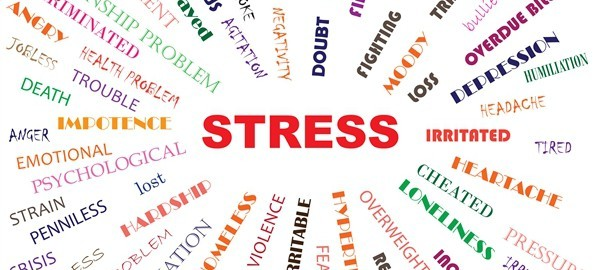

Stress Detection using Biosignals: Developed a multi-class classification model to detect human stress levels based on biosignals like heart rate, respiration rate, body temperature, and sleep patterns.
🔗 Link
Sentiment Analysis: Built an NLP pipeline to classify text into positive or negative sentiments using preprocessing techniques like tokenization, stopword removal, and TF-IDF vectorization.
🔗 Link